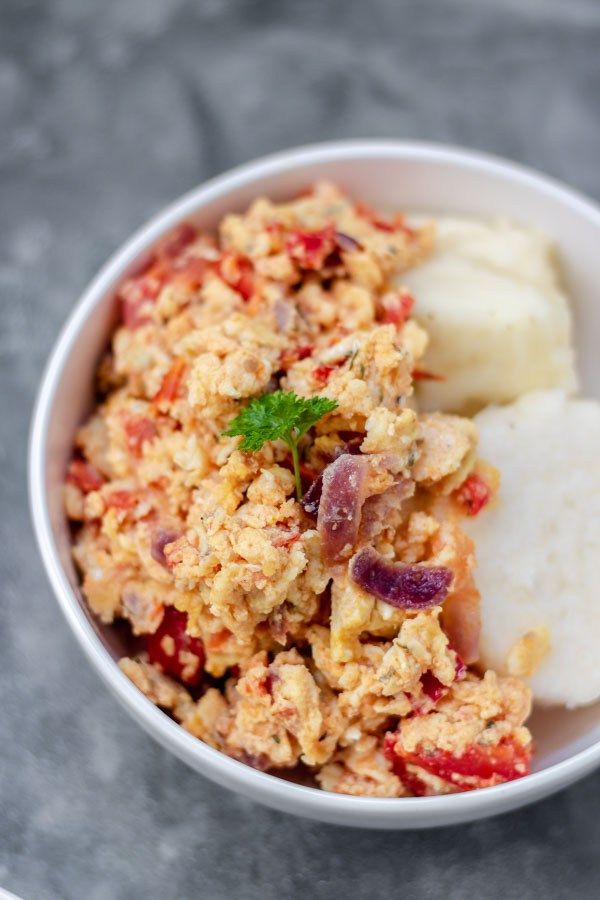

YAM
Home

About Yam
Yam is a common staple food made by boiling yam slices until soft.
It is filling, slightly sweet, and often eaten with sauce, stew or egg.
Ingredients for preparing Yam
Steps in preparing Yam
- Peel the yam and cut into pieces.
- Wash the pieces properly.
- Put in a pot and add water.
- Add a little salt or sugar.
- Boil until the yam is soft.
- Drain the water.
- Serve with sauce or stew.